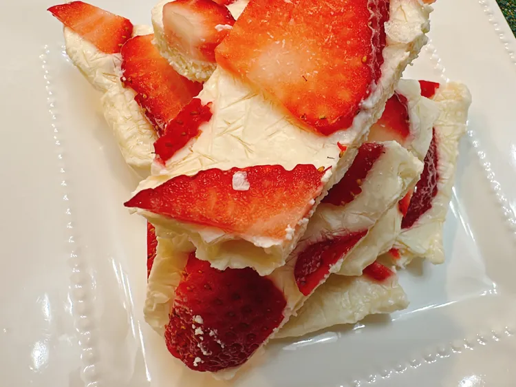

Strawberry Frozen Yogurt Bark Recipe
Home

Here is a Strawberry Frozen Yogurt Bark recipe!
Ingredients
- 3 cups vanilla whole-milk greek yogurt/li>
- 3 tbsp agave syrup
- 1/2 green bell peper
- 1 tsp vanilla extract
- 1 1/2 cup sliced strawberries
Steps
- Line a baking sheet with parchment. Stir Greek yogurt, agave syrup, and vanilla together in a bowl.
Spread the mixture out in an even layer about 1/4 inch thick on the parchment. Scatter strawberries over the top.
- Freeze until very firm, at least 4 hours and preferably overnight.